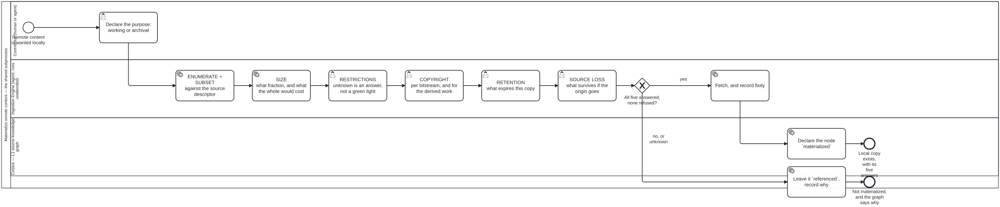

Generated from
cat-harness/processes/library/materialize-remote.bpmnbygen-processes-viz.ts— do not edit here. All processes
Materialize remote content — the shared subprocess
Process_MaterializeRemote · strict · 10 step(s)
One process, called wherever remote content is landed locally. The owner, 2026-09-20: “so if large remote collection, and no restrictions known in context, user can import/maertialize locally. size considerations apply. similar concept in bootstrapping harness… it is remtoe. content. bootstrape materelaiz cat-harness locally (or other harness)… similar, should share common subprocess.”
Two callers today and they are genuinely the same shape: sample-import.bpmn landing three items out of an ~0.7 TB catalogue, and bootstrap fetching a harness. upstream-pins.json is half of the second one’s refresh and names itself neither.
STRICT, and the five gates are why. Each is a decision a person makes and none is answerable from a file, so a gate that only warned would be a gate nobody fails — the xom7 shape, a workflow that failed all thirty times it ran with nothing in the repository saying so.
The three states (referenced / materialized / unknown) and the five gates are schemas/materialization.ts in folio-assist-core. Nothing here restates them.

How it connects
- Called by: Sample import into a structured data store, Subscribe to an external knowledge graph
- Calls: none
- Names the
materialize-remoteskill without calling this process: Refresh materialized remote content —activity-calls-skill-processasks whether each should be a call activity. - Presented on: no docs page section shows this diagram
- Skill:
materialize-remote - Running instances: none running; 2 finished:
sampleimport--xlg2-wpro-trial,sampleimport--xlg2-wpro-trial-original
Lanes — who acts
| lane | role | what it does here |
|---|---|---|
| Contributor (human or agent) | user | One task, asked first for a reason: working vs. archival is not just an input to the five gates that follow, it changes what three of them MEAN — an archival copy is the only one that can discharge source loss, and a process that gated before asking this would be judging a copy against obligations it did not yet know applied. This lane’s single decision is load-bearing for everything downstream, not a formality that precedes the real work. |
| Ingestion Engine (agent, runs unattended) | ingestion-agent | Runs the five gates in a fixed order and reaches Task_Fetch only after Gateway_Gates finds none of them refused. Before the first gate it resolves the request against the source DESCRIPTOR (Task_Enumerate), because the size being gated is the closure’s, not the request’s — size, restrictions, copyright, retention, source loss — so this lane’s job is not one decision but five independent ones, each of which can send the process to Task_StayRef on its own. It does not get to average them: unknown on any single gate is enough to keep the node referenced rather than materialized. |
| Corpus — L1 source knowledge graph | corpus | Whichever branch Gateway_Gates takes, this lane is where the outcome lands, and it is never silence: Task_Declare and Task_StayRef are the process’s only two ends, both bean-noted, because a node with no recorded state is invalid rather than defaulted. A refusal is written down with the same weight as a success — the graph still knows the node exists either way. |
Steps
Every one of the 10 step(s) is documented.
| step | lane | skill / sub-process | what it does |
|---|---|---|---|
Declare the purpose: working or archivalTask_Purpose | Contributor (human or agent) | materialize-remote | working or archival, and it is asked FIRST because three of the five gates mean different things under each. An archival copy keeps the original bytes, never expires, requires fixity, and is the only thing that discharges sourceLoss; a working copy keeps derived content and discharges none of that. A process that gated first and asked afterwards would be judging a copy whose obligations it did not yet know. |
ENUMERATE + SUBSET against the source descriptorTask_Enumerate | Ingestion Engine (agent, runs unattended) | materialize-remote | Resolve the request against the source’s descriptor (one per corpus, in the declared sources/ of the instance that owns it, e.g. who-iris/sources/), read against cat-harness/schemas/source-descriptor.ts BEFORE any gate. Three things come from it and none may be guessed. (1) Which subset strategies the source supports — supportsSubset(). (2) Whether a subset stands on its own: when subsetIsSelfContained is false (mathlib), the request is closed over its dependencies here, and every gate after this one is asked about the CLOSURE, because a subset that omits what its members depend on is not a smaller corpus, it is one that does not build. (3) What enumerating the whole costs — enumerationCost(), which is undefined when the descriptor has no measured denominator; SIZE then refuses rather than estimates. A source with no descriptor is not an error here: it is an unknown, and SIZE refuses on it. Bean w5bn: the descriptor is CALLED here rather than restated. |
SIZE what fraction, and what the whole would costTask_Size | Ingestion Engine (agent, runs unattended) | materialize-remote | What is being taken, and what the whole collection would cost. REFUSES when it cannot tell: ‘three items’ with no denominator is not a size answer. 0.7 TB is the measured reason the IRIS import is by reference. |
RESTRICTIONS unknown is an answer, not a green lightTask_Restrictions | Ingestion Engine (agent, runs unattended) | materialize-remote | The owner’s phrase is ‘no restrictions known in context’, and that is a STATE, not a green light. GateVerdict is three-valued for this reason alone, and unknown is never rendered as permitted. |
COPYRIGHT per bitstream, and for the derived workTask_Copyright | Ingestion Engine (agent, runs unattended) | materialize-remote | What the licence permits for THIS bitstream, and separately whether it permits the derivation. LICENSE-CONTENT.md exists in this repository and the ingestion pipeline does not read it. |
RETENTION what expires this copyTask_Retention | Ingestion Engine (agent, runs unattended) | materialize-remote | A copy with no expiry cannot be told from an abandoned one — the same argument bean-blocking makes about a block with no expiry. An ARCHIVAL copy is the exception and it is a specification rather than an omission: freshness() reports it permanent, not no-expiry. |
SOURCE LOSS what survives if the origin goesTask_SourceLoss | Ingestion Engine (agent, runs unattended) | materialize-remote | Not hypothetical. The one IRIS record this repository holds carries a handle on iris.wpro.who.int, a regional instance merged into the global one. Only an ARCHIVAL copy of the original bytes discharges this; a working copy cannot, because the derived sections are not the publication. |
Fetch, and record fixityTask_Fetch | Ingestion Engine (agent, runs unattended) | materialize-remote | Fetch, then record sha256 and byte count. Fixity is REQUIRED for an archival copy: an archive that cannot demonstrate it is unchanged is a copy, and it cannot be re-fetched to check, because the thing it would be re-fetched from is what it exists to survive. The data already exists — every structure.json carries sha256 and bytes, and nothing reads them as fixity. |
Declare the node materializedTask_Declare | Corpus — L1 source knowledge graph | materialize-remote | The node’s state moves from referenced to materialized, carrying purpose, localPath, gates and (archival) fixity. There is NO default state: a node that has not said is invalid, because ‘the author did not say’ and ‘the author said they could not tell’ are different facts. |
Leave it referenced, record whyTask_StayRef | Corpus — L1 source knowledge graph | materialize-remote | A refusal is not a failure of the process — it is the process working. The node stays referenced, which means the graph still knows it exists and where, and the refusing gate’s basis is recorded so the next caller does not re-litigate it. |
Decisions
Every one of the 1 decision(s) is documented.
| decision | what decides it | branches |
|---|---|---|
All five answered, none refused?Gateway_Gates | Have all five gates been answered, with none refusing? yes fetches the copy and records its fixity; no, or unknown leaves the source referenced and records why. An unanswered gate counts as a refusal. | yes → Fetch, and record fixity no, or unknown → Leave it referenced, record why |